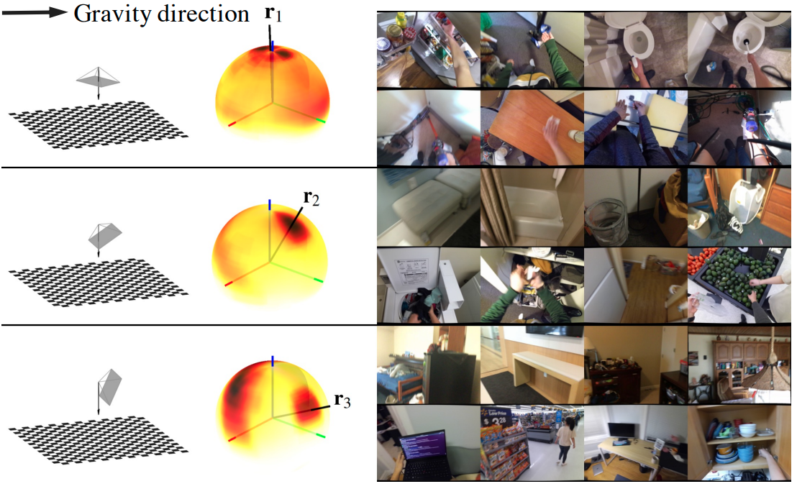
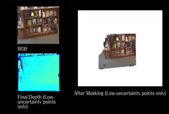
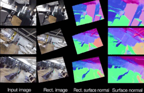
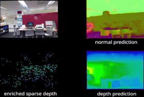
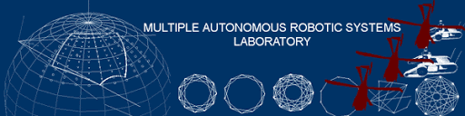

|
CV | Google Scholar | Github | LinkedIn |
I'm a graduate student (MS in Robotics) in the Robotics Institute at Carnegie Mellon University. I'm advised by Srinivasa Narasimhan as part of the Imaging Group at CMU. Previously, I received my B.S. in Computer Science from the University of Minnesota, working with Stergios Roumeliotis and Hyun Soo Park on computer vision. I also spent a summer at Enfusion Systems as a software engineering intern during my sophomore year. I'm interested in computer vision, robotics, and machine learning. Most of my research is about geometry-based vision, mainly 3D/4D reconstruction, perception, and visual scene understanding in general. |
{kind=link}
|  |
webpage |
abstract |
pdf |
code |
video |
bibtex
In this paper, we study a problem of egocentric scene understanding, i.e., predicting depths and surface normals from an egocentric image. Egocentric scene understanding poses unprecedented challenges: (1) due to large head movements, the images are taken from non-canonical viewpoints (i.e., tilted images) where existing models of geometry prediction do not apply; (2) dynamic foreground objects including hands constitute a large proportion of visual scenes. These challenges limit the performance of the existing models learned from large indoor datasets, such as ScanNet and NYUv2, which comprise predominantly upright images of static scenes. We present a multimodal spatial rectifier that stabilizes the egocentric images to a set of reference directions, which allows learning a coherent visual representation. Unlike unimodal spatial rectifier that often produces excessive perspective warp for egocentric images, the multimodal spatial rectifier learns from multiple directions that can minimize the impact of the perspective warp. To learn visual representations of the dynamic foreground objects, we present a new dataset called EDINA (Egocentric Depth on everyday INdoor Activities) that comprises more than 500K synchronized RGBD frames and gravity directions. Equipped with the multimodal spatial rectifier and the EDINA dataset, our proposed method on single-view depth and surface normal estimation significantly outperforms the baselines not only on our EDINA dataset, but also on other popular egocentric datasets, such as First Person Hand Action (FPHA) and EPIC-KITCHEN. Extension of the spatial rectifier to the multi-directional case, applying to depth/surface normal prediction from egocentric view, accompanied by a novel dataset to facilitate learning this visual representation. |
@InProceedings{Do_2022_EgoSceneMSR,
author = {Do, Tien and Vuong, Khiem and Park, Hyun Soo},
title = {Egocentric Scene Understanding via Multimodal Spatial Rectifier},
booktitle = {Proceedings of the IEEE/CVF Conference on Computer Vision and Pattern Recognition (CVPR)},
month = {June},
year = {2022}}
|
|
|  |
abstract |
pdf |
code |
bibtex
Depth estimation by multiview triangulation, followed by an iterative depth refinement module that preserves estimates with high triangulation confidence.
In this paper, we address the problem of estimating dense depth from a sequence of images using deep neural networks. Specifically, we employ a dense-optical-flow network to compute correspondences and then triangulate the point cloud to obtain an initial depth map.Parts of the point cloud, however, may be less accurate than others due to lack of common observations or small parallax. To further increase the triangulation accuracy, we introduce a depth-refinement network (DRN) that optimizes the initial depth map based on the image's contextual cues. In particular, the DRN contains an iterative refinement module (IRM) that improves the depth accuracy over iterations by refining the deep features. Lastly, the DRN also predicts the uncertainty in the refined depths, which is desirable in applications such as measurement selection for scene reconstruction. We show experimentally that our algorithm outperforms state-of-the-art approaches in terms of depth accuracy, and verify that our predicted uncertainty is highly correlated to the actual depth error. |
@inproceedings{ke2021deep,
title={Deep Multi-view Depth Estimation with Predicted Uncertainty},
author={Ke, Tong and Do, Tien and Vuong, Khiem and Sartipi, Kourosh and Roumeliotis, Stergios I},
booktitle={2021 IEEE International Conference on Robotics and Automation (ICRA)},
pages={9235--9241},
year={2021},
organization={IEEE}
}
|
|
|  |
webpage |
abstract |
pdf |
code |
video |
bibtex
Robust surface normal estimation by spatially rectifying image to the densely distributed orientations.
In this paper, we present a spatial rectifier to estimate surface normals of tilted images. Tilted images are of particular interest as more visual data are captured by arbitrarily oriented sensors such as body-/robot-mounted cameras. Existing approaches exhibit bounded performance on predicting surface normals because they were trained using gravity-aligned images. Our two main hypotheses are: (1) visual scene layout is indicative of the gravity direction; and (2) not all surfaces are equally represented by a learned estimator due to the structured distribution of the training data, thus, there exists a transformation for each tilted image that is more responsive to the learned estimator than others. We design a spatial rectifier that is learned to transform the surface normal distribution of a tilted image to the rectified one that matches the gravity-aligned training data distribution. Along with the spatial rectifier, we propose a novel truncated angular loss that offers a stronger gradient at smaller angular errors and robustness to outliers. The resulting estimator outperforms the state-of-the-art methods including data augmentation baselines not only on ScanNet and NYUv2 but also on a new dataset called Tilt-RGBD that includes considerable roll and pitch camera motion. |
@InProceedings{Do2020SurfaceNormal,
author = {Do, Tien and Vuong, Khiem and Roumeliotis, Stergios I. and Park, Hyun Soo},
title = {Surface Normal Estimation of Tilted Images
via Spatial Rectifier},
booktitle = {Proc. of the European Conference on Computer Vision},
month = {August} # { 23--28},
address={Virtual Conference},
year = {2020}}
|
|
|  |
abstract |
pdf |
code |
bibtex
Depth estimation by completing a very sparse VI-SLAM point cloud using planar constraint from robust surface normal prediction.
This paper addresses the problem of learning to complete a scene's depth from sparse depth points and images of indoor scenes. Specifically, we study the case in which the sparse depth is computed from a visual-inertial simultaneous localization and mapping (VI-SLAM) system. The resulting point cloud has low density, it is noisy, and has non-uniform spatial distribution, as compared to the input from active depth sensors, e.g., LiDAR or Kinect. Since the VI-SLAM produces point clouds only over textured areas, we compensate for the missing depth of the low-texture surfaces by leveraging their planar structures and their surface normals which is an important intermediate representation. The pre-trained surface normal network, however, suffers from large performance degradation when there is a significant difference in the viewing direction (especially the roll angle) of the test image as compared to the trained ones. To address this limitation, we use the available gravity estimate from the VI-SLAM to warp the input image to the orientation prevailing in the training dataset. This results in a significant performance gain for the surface normal estimate, and thus the dense depth estimates. Finally, we show that our method outperforms other state-of-the-art approaches both on training (ScanNet and NYUv2) and testing (collected with Azure Kinect) datasets. |
@inproceedings{sartipi2020deep,
title={Deep depth estimation from visual-inertial slam},
author={Sartipi, Kourosh and Do, Tien and Ke, Tong and Vuong, Khiem and Roumeliotis, Stergios I},
booktitle={2020 IEEE/RSJ International Conference on Intelligent Robots and Systems (IROS)},
pages={10038--10045},
year={2020},
organization={IEEE}
}
|
|
|
|
Research Assistant
Oct. 2021 - Present
Illumination and Imaging Laboratory (ILIM), Imaging Group Advisor: Prof. Srinivasa Narasimhan |
|  |
Research Assistant
Sep. 2019 - Jun. 2021
Multiple Autonomous Robotic Systems Laboratory (MARS) Advisor: Prof. Stergios I. Roumeliotis & Prof. Hyun Soo Park |
|
Software Engineering Intern
Jun. 2019 - Aug. 2019
Enfusion Systems Team: Backend services, Portfolio Management Systems (PMS) |
Modified version of template from here |